Contents
- Compute spectrum...
- Plotting functions
- Display original image
- Plot Spectral Estimate from provided radial autocorrelation
- Filtering
- Compute the errors
- Compute error across sigmas
- Deconvolution Weiner filter
- Compute for specific sigma
- Display convolved image
- Display convolution filter
- Display FFT of conv filter
- Spectrum of convoluted signal
- Display spectrum of estimate
- Display filter
- Display filtered image
- SNR in raw image
- SNR in freq space
- Compute the errors
load hw6/hw6.mat d dc dpn dcpn Rxx_est sigman pattern
Compute spectrum...
function Sxx = spectrum2d_from_radial(Rx) scale = false; if size(Rx) ~= [256, 1] error("Input must be size (256, 1)") end Rxx = zeros(512, 512); ixm = 257; iym = 257; for iix = 1:512 for iiy = 1:512 Rxx(iix, iiy) = Rx( ... min([ ... round(sqrt((iix - ixm)^2 + (iiy - iym)^2)) ... 255] ... ) + 1); end end % Scale the autocorrelation function to ensure that the power is % a multiple of 10. % Note this scaling factor really doesn't do anything since Sxx is % rescaled by Rx anyways... if scale Rxx = Rxx * 10 * round(Rxx(257, 257)/10) / Rxx(257, 257); end Sxx = fftshift(abs(fft2(Rxx))); % Make sure spectrum sums to the correct power (as given by the % Rxx_est variable. Sxx = Rx(1) * Sxx ./ sum(sum(Sxx)); end
Plotting functions
function plot_2d_db(im) imagesc(20 * log10(im)); colormap("jet(256)"); colorbar end function image_gray(im) image(im) colormap(repmat(linspace(0, 1, 256)', 1, 3)); colorbar end
Display original image
image_gray(d)
title("GOES west -- Hurricane Patricia 10/23/15 23:45 UTC")
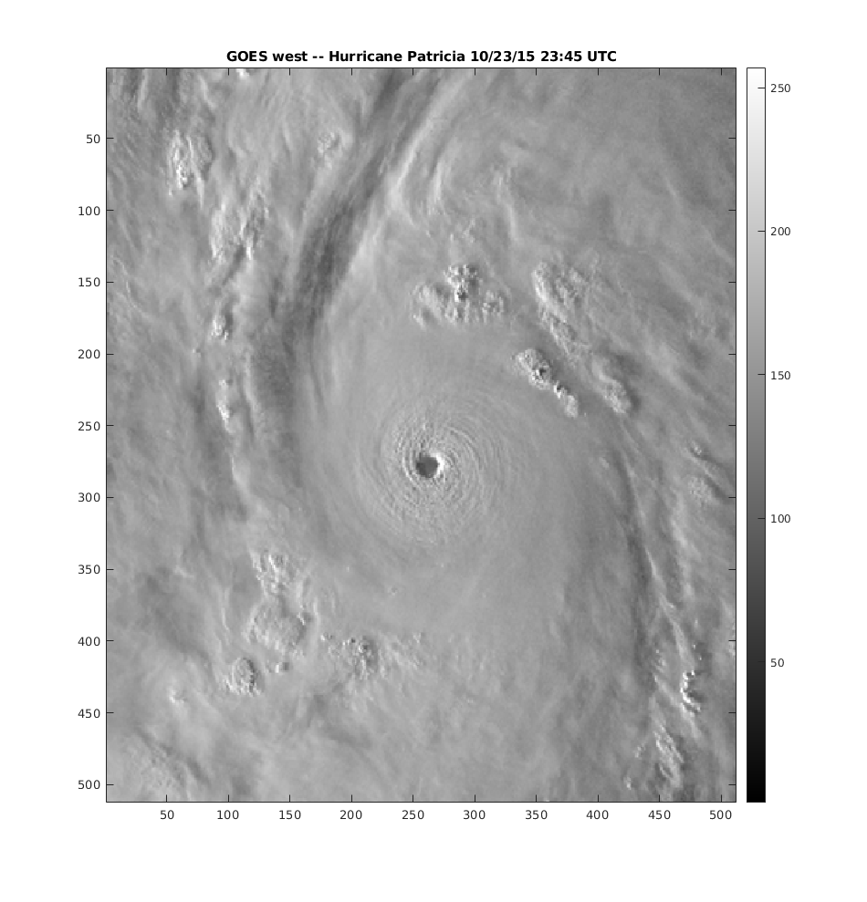
Plot Spectral Estimate from provided radial autocorrelation
Sxx = spectrum2d_from_radial(Rxx_est); figure() plot_2d_db(Sxx)
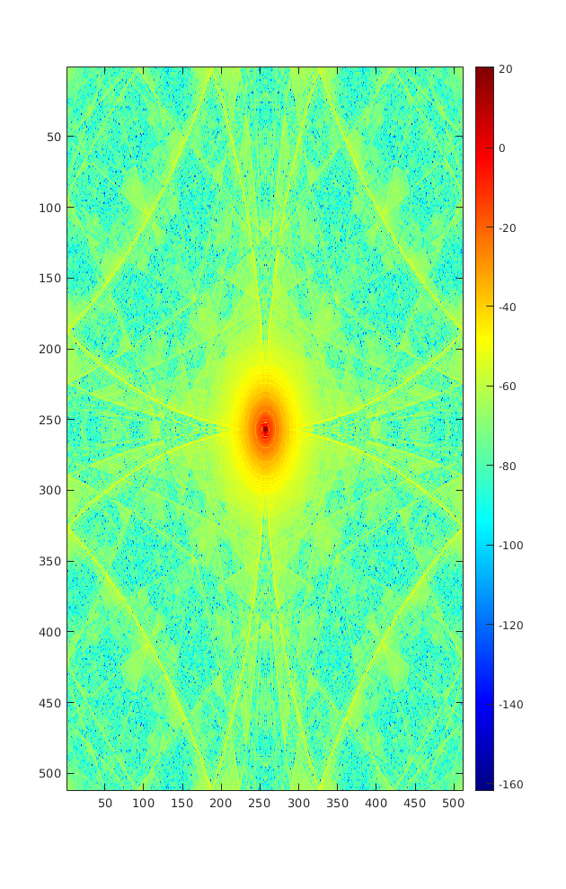
Filtering
function D = create_weiner_filter(Sxx, sigma) Snn = sigma^2 / 2 * ones(size(Sxx)); SNR = Sxx ./ Snn; D = 1 ./ (1 + 1./SNR); end function [x_est, Sxx] = freq_space_filter(x_in, D) % Perform fft, apply filter multiplicatively, and then ifft. Syy = fftshift(fft2(x_in)); Sxx = D .* Syy; x_est = ifft2(ifftshift(Sxx)); end % Use FFT-computed spectrum from raw signal for filtering sigma = 20; Sxx = fftshift(abs(fft2(d)).^2 / 512^2); % Sxx = spectrum2d_from_radial(Rxx_est); D = create_weiner_filter(Sxx, sigma); [d_est, Sxx_est] = freq_space_filter(dpn, D);
Compute the errors
e1 = sum(sum(abs(dpn - d))); e2 = sum(sum(abs(d_est - d))); fprintf("Total error in noisy image: %g\n", e1) fprintf("Total error in filtered image: %g\n", e2)
Total error in noisy image: 2.82457e+06 Total error in filtered image: 866103
figure()
plot_2d_db(D)
title("Filter")
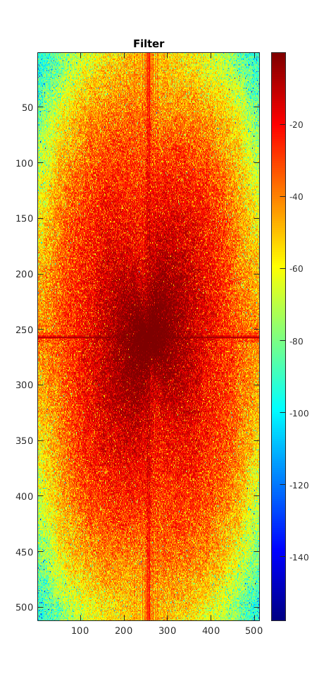
figure()
plot_2d_db(abs(Sxx))
title("Signal spectrum (Sxx) used for filter")
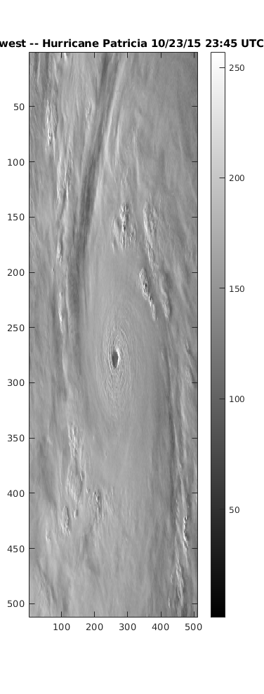
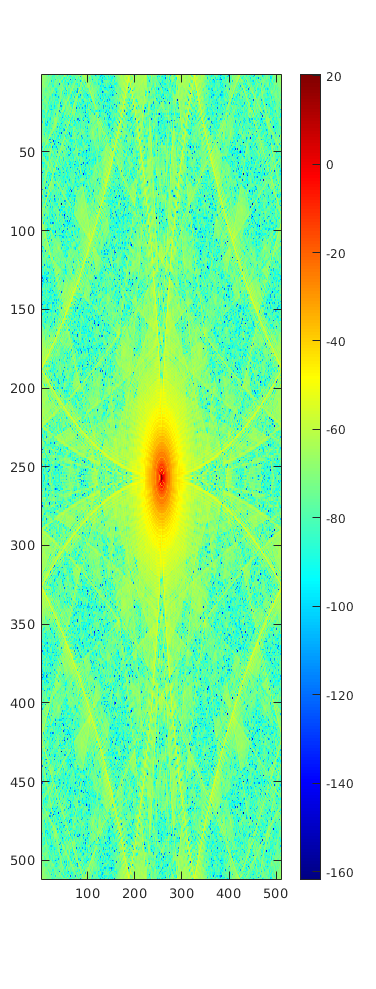
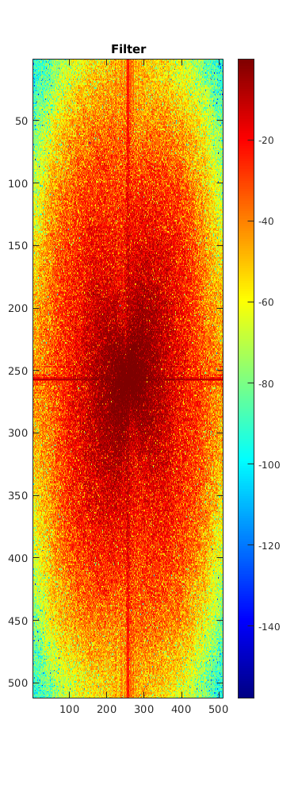
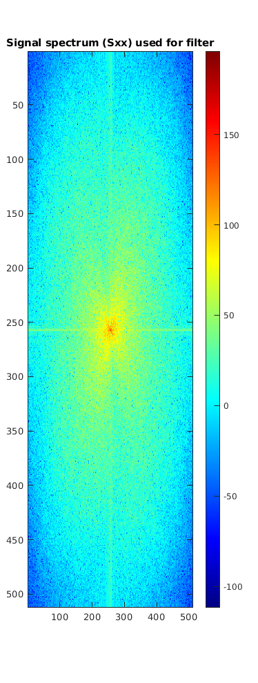
figure()
plot_2d_db(abs(Sxx_est))
title("Filtered spectrum (Sxx_hat)")
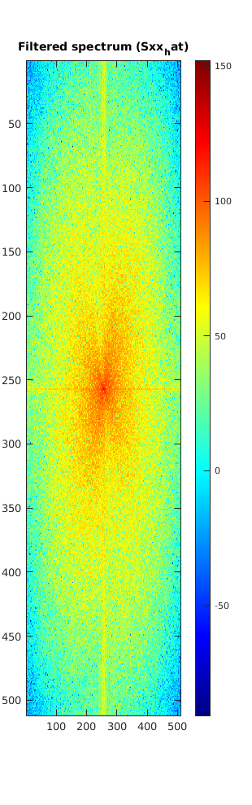
figure()
image(dpn)
colormap(repmat(linspace(0, 1, 256)', 1, 3));
colorbar
title("Noisy image")
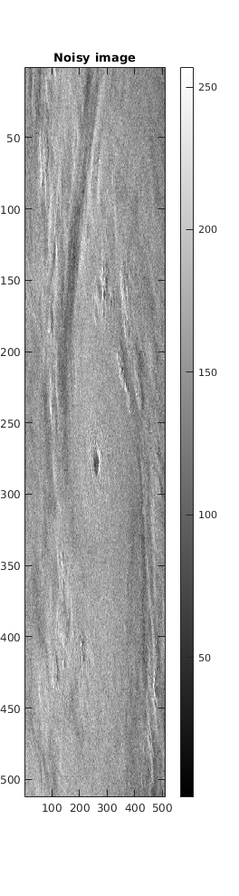
figure()
image_gray(d_est)
title("Filtered image")
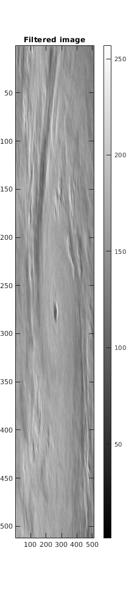
Compute error across sigmas
Sxx = fftshift(abs(fft2(d)).^2 / 512^2); % Rxx = conv2(d, d, "same"); % Sxx = fftshift(abs(fft2(Rxx))); Sxx = spectrum2d_from_radial(Rxx_est); sigmas = logspace(-3, 5); errors = zeros(size(sigmas)); snr = zeros(size(sigmas)); for i=1:length(sigmas) sigma = sigmas(i); D = create_weiner_filter(Sxx, sigma); [d_est, Sxx_est] = freq_space_filter(dpn, D); errors(i) = mean(abs(d_est - d), "all"); % Compute the signal to noise ratio over image: snr_all = abs(d) ./ abs(d - d_est); snr(i) = mag2db(mean(snr_all, "all")); end figure() % hold on; semilogx(sigmas, errors) title("Error versus assumed noise variance") xlabel("\sigma") ylabel("Error")
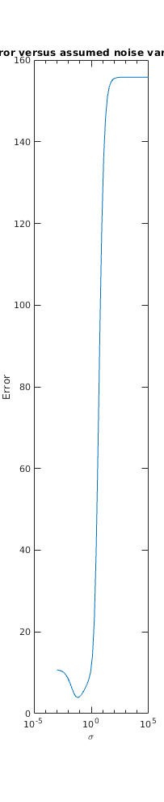
Deconvolution Weiner filter
function D = create_dconv_weiner_filter(Sxx, sigma, W) Snn = sigma^2 / 2 * ones(size(Sxx)); SNR = Sxx ./ Snn; D = abs(W)^2 ./ (abs(W)^2 + 1./SNR) ./ W; end N = size(d, 1); P = size(pattern, 1); % Pad with zeros so that frequency indeces match. w = paddata(pattern, [N, N]); W = fftshift(fft2(w)); W = abs(W); % Sxx = fftshift(abs(fft2(dcpn)).^2 / 512^2); Sxx = spectrum2d_from_radial(Rxx_est); sigmas = logspace(-3, 5)'; errors = zeros(size(sigmas)); for i=1:length(sigmas) sigma = sigmas(i); D = create_dconv_weiner_filter(Sxx, sigma, W); [d_est, Sxx_est] = freq_space_filter(dcpn, D); errors(i) = mean(abs(d_est - d).^2, "all"); % Compute the signal to noise ratio over image: snr_all = abs(d) ./ abs(d - d_est); snr(i) = mag2db(mean(snr_all, "all")); end
figure() loglog(sigmas, errors)
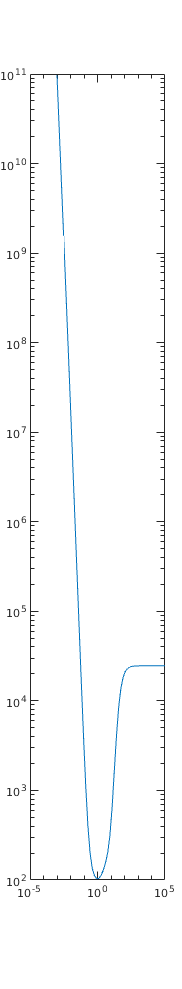
Compute for specific sigma
sigma = 1; D = create_dconv_weiner_filter(Sxx, sigma, W); [d_est, Sxx_est] = freq_space_filter(dcpn, D);
Display convolved image
figure()
image(dcpn)
colormap(repmat(linspace(0, 1, 256)', 1, 3));
colorbar
title("Noisy + Convolved image")
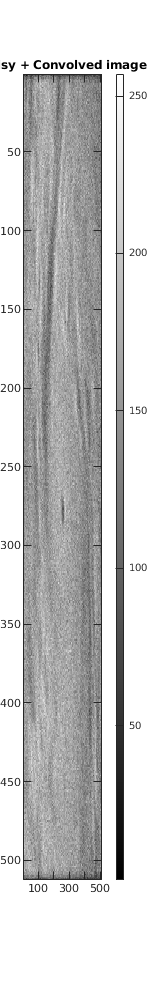
Display convolution filter
figure()
plot_2d_db(w)
title("Gaussian filter w(t)")
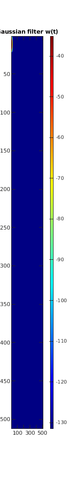
Display FFT of conv filter
figure()
plot_2d_db(W)
title("Spectrum of Gaussian filter W(f)")
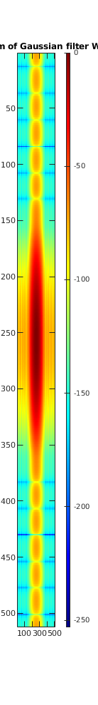
Spectrum of convoluted signal
Sxx_conv = fftshift(abs(fft2(dc)).^2 / 512^2);
figure()
plot_2d_db(Sxx_conv)
title("Spectrum of convoluted signal (dc)")
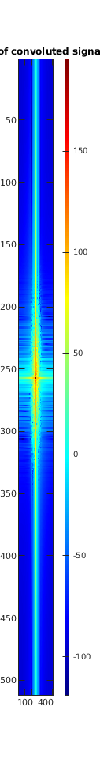
Display spectrum of estimate
figure() plot_2d_db(abs(Sxx_est))
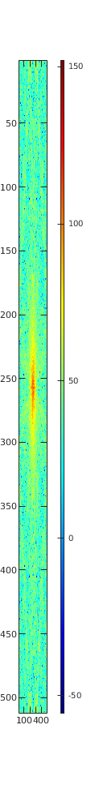
Display filter
figure()
plot_2d_db(abs(D))
title("Filter (D(f))")
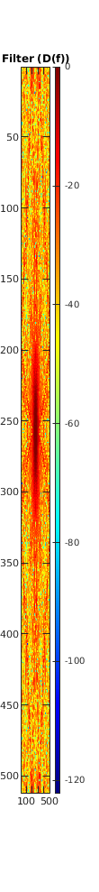
Display filtered image
figure()
image_gray(abs(d_est))
title("Deconvolved Image")
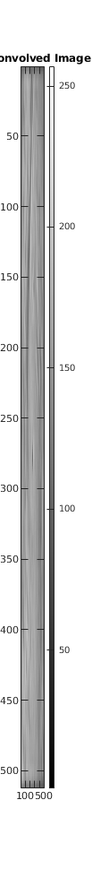
SNR in raw image
snr_all = abs(d) ./ abs(d - d_est);
snr = mag2db(mean(snr_all, "all"))
plot_2d_db(snr_all)
snr = 48.3953
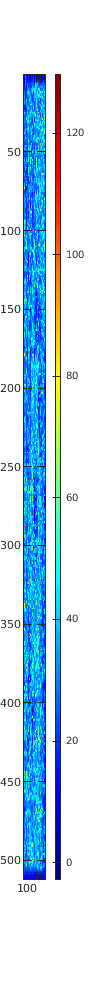
SNR in freq space
Sxx = fftshift(abs(fft2(d)));
Snn = fftshift(abs(fft2(d - dpn)));
snr_all = Sxx ./ Snn;
snr = mag2db(mean(snr_all, "all"))
plot_2d_db(snr_all)
snr = -2.0914
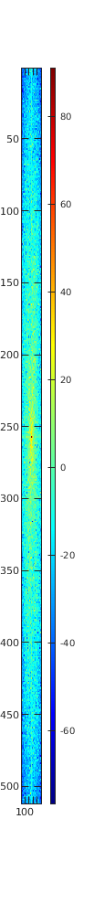
Compute the errors
e1 = sum(sum(abs(dpn - d))); e2 = sum(sum(abs(d_est - d))); e3 = sum(sum(abs(dcpn - d))); fprintf("Total error in noisy image: %g\n", e1) fprintf("Total error in filtered image: %g\n", e2) fprintf("Total error in convolved + noise: %g\n", e3)
Total error in noisy image: 2.82457e+06 Total error in filtered image: 1.66678e+06 Total error in convolved + noise: 3.35249e+06